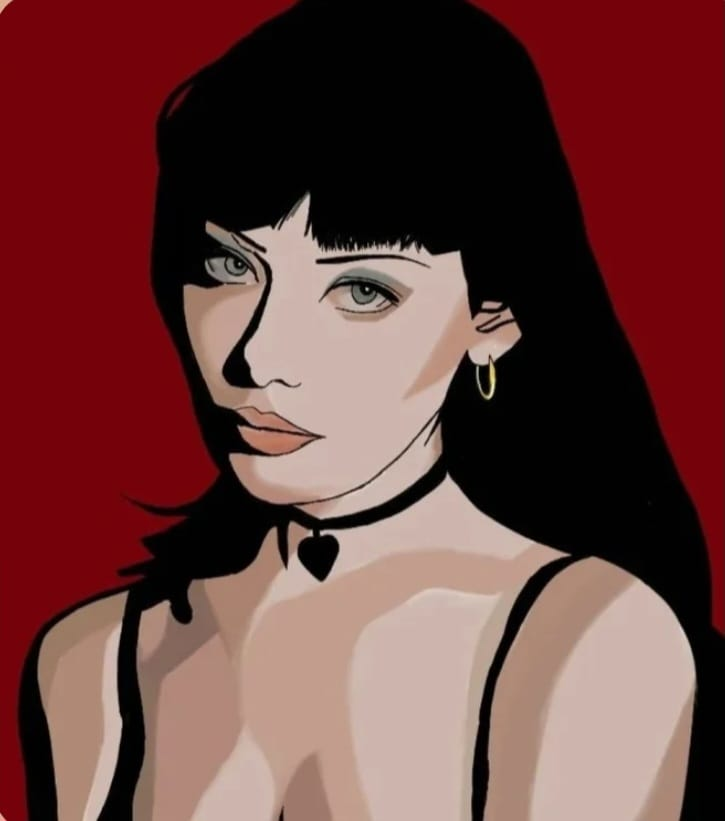
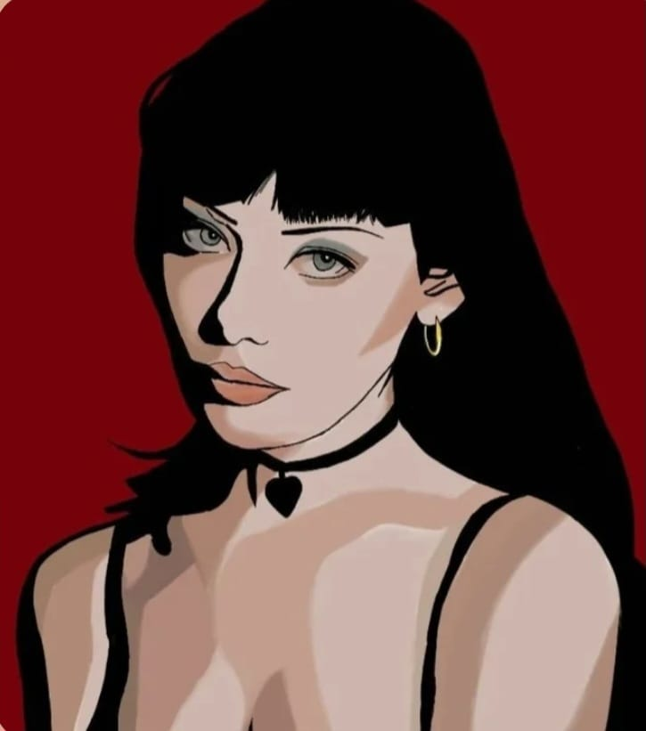

Sobre o autor
Sobre o autor: Leonardo Nickson é nascido em Telêmaco Borba, Paraná. Iniciou seus estudos de música na casa da cultura no início dos anos 2000. Em 2010 formou-se em História na UEL. Após lecionar em diversas instituições, passou no concurso do IFPR no final de 2015, onde é professor em dedicação exclusiva desde então. Em 2018 tornou-se especialista em Artes Visuais pela UEM, e em 2023 tornou-se Mestre pela UTFPR. Além da música, sua ênfase artística é na fotografia, onde atua desde 2016. Possui produções na audiovisuais, com a produção de clipes musicais e documentários sobre a história local.
Sala de Artes
A sala de Artes do IFPR é um espaço onde os alunos podem soltar a criatividade e experimentar diferentes formas de expressão, como pintura, desenho, teatro e música. O ambiente é acolhedor e cheio de possibilidades. Além de aprender técnicas, os estudantes também descobrem novas formas de se expressar e valorizar a cultura. É um lugar que une aprendizado, arte e imaginação.

Aulas
Manhã
- Sexta-feira
10:00 - 12:00
Arte II - AUT4 / MEC4 / INFO4
Sem aula
Arte III - JOG4 Lab de Música
13:30 - 15:30
Arte I - JOG1 Quiosque
Arte e Vídeo
Tarde
- Quarta
13:30 - 15:30
MEC1 - Quinta
13:30 - 15:30
INFO1 - Quinta
16:00 - 18:00
AUT1
Projetos
- Quarta
09:00 - 11:00
Audiovisual / Fotografia - Quinta
09:00 - 12:00
Audiovisual / Fotografia - Sexta
08:00 - 10:00
Clube dos Artistas
Projetos
Fotografia

tem como objetivo despertar o olhar crítico e criativo de estudantes do ensino médio por meio da fotografia
Audiovisual
tem como proposta apresentar os fundamentos da produção audiovisual, incentivando o desenvolvimento de habilidades criativas, técnicas e comunicativas por meio de vídeos.
Clube de Artistas
 

Explora pintura e expressão artística.